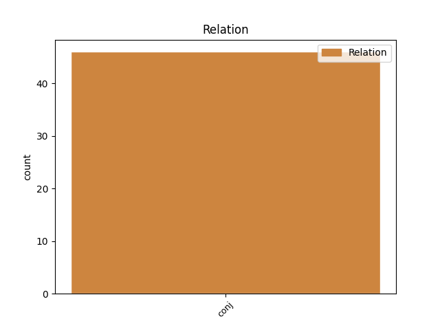
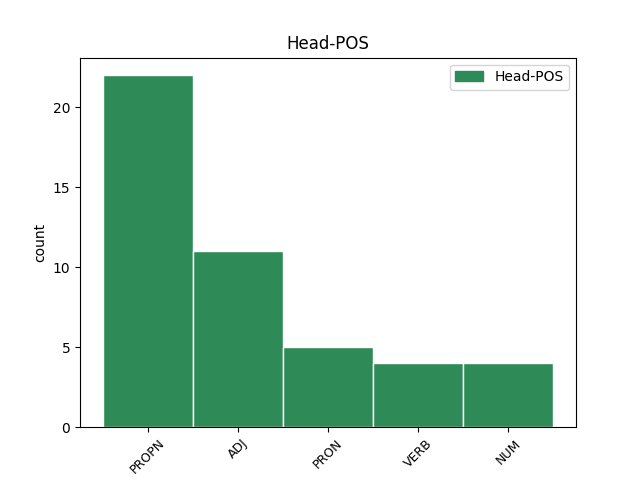
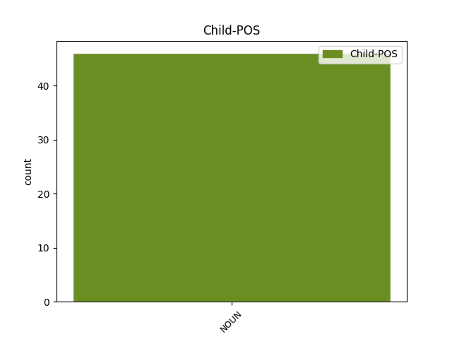

Distribution of features within this leaf



Agreement Rules sorted by frequency.
- When the dependent token is the conjunct(conj) of the head token, and the head token is PROPN and the dependent token is NOUN.
1 ꙇзиде _ _ _ _ 0 _ _ _
2 же _ _ _ _ 0 _ _ _
3 петръ петръ PROPN Ne Case=Nom|Gender=Masc|Number=Sing 0 _ _ _
4 и _ _ _ _ 0 _ _ _
5 дроугꙑ _ _ _ _ 0 _ _ _
6 оученикъ оученикъ NOUN Nb Case=Nom|Gender=Masc|Number=Sing 3 conj _ ref=JOHN_20.3
7 ꙇ _ _ _ _ 0 _ _ _
8 идѣашете _ _ _ _ 0 _ _ _
9 къ _ _ _ _ 0 _ _ _
10 гробоу _ _ _ _ 0 _ _ _
1 ни _ _ _ _ 0 _ _ _
2 сь сь ADJ Pd Case=Nom|Gender=Masc|Number=Sing 0 _ _ _
3 съгрѣши _ _ _ _ 0 _ _ _
4 ни _ _ _ _ 0 _ _ _
5 родителѣ родитель NOUN Nb Case=Nom|Gender=Masc|Number=Dual 2 conj _ ref=JOHN_9.3
6 его _ _ _ _ 0 _ _ _
7 нъ _ _ _ _ 0 _ _ _
8 да _ _ _ _ 0 _ _ _
9 авѧтъ _ _ _ _ 0 _ _ _
10 сѧ _ _ _ _ 0 _ _ _
11 дѣла _ _ _ _ 0 _ _ _
12 б҃жиѣ _ _ _ _ 0 _ _ _
13 на _ _ _ _ 0 _ _ _
14 немъ _ _ _ _ 0 _ _ _
1 естъ _ _ _ _ 0 _ _ _
2 отрочиштъ _ _ _ _ 0 _ _ _
3 сьде _ _ _ _ 0 _ _ _
4 единъ _ _ _ _ 0 _ _ _
5 ꙇже _ _ _ _ 0 _ _ _
6 иматъ _ _ _ _ 0 _ _ _
7 пѧть пѧть NUM Ma Case=Acc|Gender=Fem|Number=Sing 0 _ _ _
8 хлѣбъ _ _ _ _ 0 _ _ _
9 ѩчьнъ _ _ _ _ 0 _ _ _
10 ꙇ _ _ _ _ 0 _ _ _
11 дьвѣ _ _ _ _ 0 _ _ _
12 рꙑбѣ рꙑба NOUN Nb Case=Acc|Gender=Fem|Number=Dual 7 conj _ ref=JOHN_6.9
1 ꙇ _ _ _ _ 0 _ _ _
2 егда _ _ _ _ 0 _ _ _
3 придѫ _ _ _ _ 0 _ _ _
4 на _ _ _ _ 0 _ _ _
5 мѣсто _ _ _ _ 0 _ _ _
6 нарицаемое _ _ _ _ 0 _ _ _
7 краниево _ _ _ _ 0 _ _ _
8 тоу _ _ _ _ 0 _ _ _
9 пропѧсѧ _ _ _ _ 0 _ _ _
10 и и PRON Pp Case=Acc|Gender=Masc|Number=Sing|Person=3|PronType=Prs 0 _ _ _
11 ꙇ _ _ _ _ 0 _ _ _
12 зълодѣа зълодѣи NOUN Nb Case=Acc|Gender=Masc|Number=Dual 10 conj _ ref=LUKE_23.33
13 ового _ _ _ _ 0 _ _ _
14 оубо _ _ _ _ 0 _ _ _
15 о _ _ _ _ 0 _ _ _
16 деснѫѭ _ _ _ _ 0 _ _ _
17 а _ _ _ _ 0 _ _ _
18 дроугааго _ _ _ _ 0 _ _ _
19 о _ _ _ _ 0 _ _ _
20 шѫѭѫ _ _ _ _ 0 _ _ _
1 ꙇ _ _ _ _ 0 _ _ _
2 обрѣте _ _ _ _ 0 _ _ _
3 въ _ _ _ _ 0 _ _ _
4 ц҃ркве _ _ _ _ 0 _ _ _
5 продаѭштѧѩ продаꙗти VERB V- Case=Acc|Gender=Masc|Number=Plur|Strength=Weak|Tense=Pres|VerbForm=Part|Voice=Act 0 _ _ _
6 овъцѧ _ _ _ _ 0 _ _ _
7 и _ _ _ _ 0 _ _ _
8 волꙑ _ _ _ _ 0 _ _ _
9 ꙇ _ _ _ _ 0 _ _ _
10 голѫби _ _ _ _ 0 _ _ _
11 ꙇ _ _ _ _ 0 _ _ _
12 пѣнѧжъникꙑ пѣнѧжьникъ NOUN Nb Case=Acc|Gender=Masc|Number=Plur 5 conj _ ref=JOHN_2.14
13 сѣдѧштѧ _ _ _ _ 0 _ _ _
14 ꙇ _ _ _ _ 0 _ _ _
15 сътвори _ _ _ _ 0 _ _ _
16 бичь _ _ _ _ 0 _ _ _
17 отъ _ _ _ _ 0 _ _ _
18 връвии҅ _ _ _ _ 0 _ _ _
19 вьсѧ _ _ _ _ 0 _ _ _
20 изгъна _ _ _ _ 0 _ _ _
21 и _ _ _ _ 0 _ _ _
22 ц҃ркве _ _ _ _ 0 _ _ _
23 овъцѧ _ _ _ _ 0 _ _ _
24 же _ _ _ _ 0 _ _ _
25 и _ _ _ _ 0 _ _ _
26 волꙑ _ _ _ _ 0 _ _ _
27 ꙇ _ _ _ _ 0 _ _ _
28 тръжьникомъ _ _ _ _ 0 _ _ _
29 расꙑпа _ _ _ _ 0 _ _ _
30 пѣнѧѕꙑ _ _ _ _ 0 _ _ _
31 ꙇ _ _ _ _ 0 _ _ _
32 дъскꙑ _ _ _ _ 0 _ _ _
33 опровръже _ _ _ _ 0 _ _ _
34 ꙇ _ _ _ _ 0 _ _ _
35 продаѭштимъ _ _ _ _ 0 _ _ _
36 голѫби _ _ _ _ 0 _ _ _
37 рече _ _ _ _ 0 _ _ _
Disagree Examples:
1 Ваши _ _ _ _ 0 _ _ _
2 же _ _ _ _ 0 _ _ _
3 блаженѣи блаженъ ADJ A- Case=Nom|Degree=Pos|Gender=Fem,Neut|Number=Dual|Strength=Weak 0 _ _ _
4 очи _ _ _ _ 0 _ _ _
5 ѣко _ _ _ _ 0 _ _ _
6 видите _ _ _ _ 0 _ _ _
7 ꙇ _ _ _ _ 0 _ _ _
8 оуши оухо NOUN Nb Case=Nom|Gender=Neut|Number=Dual 3 conj _ ref=MATT_13.16
9 ваши _ _ _ _ 0 _ _ _
10 ѣко _ _ _ _ 0 _ _ _
11 слꙑшите _ _ _ _ 0 _ _ _
1 не _ _ _ _ 0 _ _ _
2 имѫштю _ _ _ _ 0 _ _ _
3 же _ _ _ _ 0 _ _ _
4 емоу _ _ _ _ 0 _ _ _
5 въздати _ _ _ _ 0 _ _ _
6 повелѣ _ _ _ _ 0 _ _ _
7 г҃ъ _ _ _ _ 0 _ _ _
8 его _ _ _ _ 0 _ _ _
9 да _ _ _ _ 0 _ _ _
10 продадѧтъ _ _ _ _ 0 _ _ _
11 і и PRON Pp Case=Acc|Gender=Masc|Number=Sing|Person=3|PronType=Prs 0 _ _ _
12 и _ _ _ _ 0 _ _ _
13 женѫ жена NOUN Nb Case=Acc|Gender=Fem|Number=Sing 11 conj _ ref=MATT_18.25
14 его _ _ _ _ 0 _ _ _
15 и _ _ _ _ 0 _ _ _
16 чѧда _ _ _ _ 0 _ _ _
17 ꙇ _ _ _ _ 0 _ _ _
18 вьсе _ _ _ _ 0 _ _ _
19 елико _ _ _ _ 0 _ _ _
20 имѣаше _ _ _ _ 0 _ _ _
21 ꙇ _ _ _ _ 0 _ _ _
22 отъдати _ _ _ _ 0 _ _ _
23 й _ _ _ _ 0 _ _ _
1 ѣкоже _ _ _ _ 0 _ _ _
2 ч҃лвкъ _ _ _ _ 0 _ _ _
3 оходѧ _ _ _ _ 0 _ _ _
4 остави _ _ _ _ 0 _ _ _
5 домъ _ _ _ _ 0 _ _ _
6 свои _ _ _ _ 0 _ _ _
7 ꙇ _ _ _ _ 0 _ _ _
8 давъ дати VERB V- Case=Nom|Gender=Masc|Number=Sing|Strength=Strong|Tense=Past|VerbForm=Part|Voice=Act 0 _ _ _
9 рабомъ _ _ _ _ 0 _ _ _
10 своимъ _ _ _ _ 0 _ _ _
11 властъ _ _ _ _ 0 _ _ _
12 и _ _ _ _ 0 _ _ _
13 комоужъдо _ _ _ _ 0 _ _ _
14 дѣло дѣло NOUN Nb Case=Acc|Gender=Neut|Number=Sing 8 conj _ ref=MARK_13.34
15 свое _ _ _ _ 0 _ _ _
16 ꙇ _ _ _ _ 0 _ _ _
17 вратьникоу _ _ _ _ 0 _ _ _
18 повелѣ _ _ _ _ 0 _ _ _
19 да _ _ _ _ 0 _ _ _
20 бьдитъ _ _ _ _ 0 _ _ _
21 бьдите _ _ _ _ 0 _ _ _
22 оубо _ _ _ _ 0 _ _ _
1 приѩтъ _ _ _ _ 0 _ _ _
2 и҃лѣ _ _ _ _ 0 _ _ _
3 отрока _ _ _ _ 0 _ _ _
4 своего _ _ _ _ 0 _ _ _
5 помѣнѫти _ _ _ _ 0 _ _ _
6 милость _ _ _ _ 0 _ _ _
7 ѣкоже _ _ _ _ 0 _ _ _
8 г҃ла _ _ _ _ 0 _ _ _
9 къ _ _ _ _ 0 _ _ _
10 о҃тцмъ _ _ _ _ 0 _ _ _
11 нашимъ _ _ _ _ 0 _ _ _
12 аврамоу авраамъ PROPN Ne Case=Dat|Gender=Masc|Number=Sing 0 _ _ _
13 и _ _ _ _ 0 _ _ _
14 сѣмени сѣмѧ NOUN Nb Case=Dat|Gender=Neut|Number=Sing 12 conj _ ref=LUKE_1.55
15 его _ _ _ _ 0 _ _ _
16 до _ _ _ _ 0 _ _ _
17 вѣка _ _ _ _ 0 _ _ _
1 ꙇ _ _ _ _ 0 _ _ _
2 слꙑшашѧ _ _ _ _ 0 _ _ _
3 окръсть _ _ _ _ 0 _ _ _
4 живѫштеи жити VERB V- Case=Nom|Gender=Masc|Number=Plur|Strength=Weak|Tense=Pres|VerbForm=Part|Voice=Act 0 _ _ _
5 ꙇ _ _ _ _ 0 _ _ _
6 рождение рождениѥ NOUN Nb Case=Nom|Gender=Neut|Number=Sing 4 conj _ ref=LUKE_1.58
7 еѩ҅ _ _ _ _ 0 _ _ _
8 ѣко _ _ _ _ 0 _ _ _
9 вьзвеличилъ _ _ _ _ 0 _ _ _
10 естъ _ _ _ _ 0 _ _ _
11 г҃ъ _ _ _ _ 0 _ _ _
12 милость _ _ _ _ 0 _ _ _
13 своѭ _ _ _ _ 0 _ _ _
14 съ _ _ _ _ 0 _ _ _
15 неѭ _ _ _ _ 0 _ _ _
16 ꙇ _ _ _ _ 0 _ _ _
17 радовахѫ _ _ _ _ 0 _ _ _
18 сѧ _ _ _ _ 0 _ _ _
19 съ _ _ _ _ 0 _ _ _
20 неѭ҄ _ _ _ _ 0 _ _ _